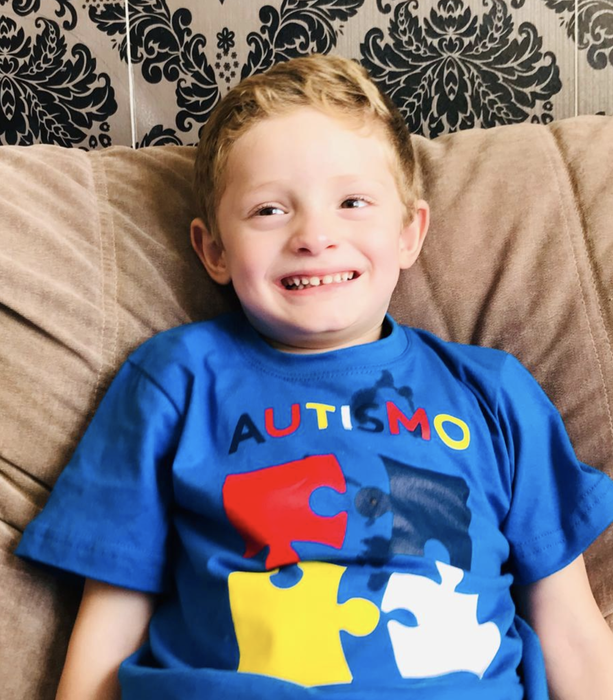

Aprenda mais sobre autismo
O Transtorno do Espectro do Autismo (TEA) reúne desordens do desenvolvimento neurológico presentes desde o nascimento ou começo da infância.
Quero saber mais

Características do autismo
O TEA afeta o comportamento do indivíduo, e os primeiros sinais podem ser notados em bebês de poucos meses. No geral, uma criança do espectro autista apresenta os seguintes sintomas:
- Dificuldade para interagir socialmente, como manter o contato visual, expressão facial, gestos, expressar as próprias emoções e fazer amigos;
- Dificuldade na comunicação, optando pelo uso repetitivo da linguagem e bloqueios para começar e manter um diálogo;
- Alterações comportamentais, como manias, apego excessivo a rotinas, ações repetitivas, interesse intenso em coisas específicas, dificuldade de imaginação e sensibilidade sensorial (hiper ou hipo).
Acessibilidade digital para inclusão de pessoas com autismo
- Interfaces simples e previsíveis
- Represente ums informação em mais de um formato
- Elimine distrações que possam causar estresse
- Atenção ao uso de cores saturadas e sons que possam pertubar
- Evite metáforas e figuras de limguagem na comunicação
Um pouco mais sobre interfaces para autismo
Para saber mais entre em contato com a gente
Fonte: Autismo e Realidade